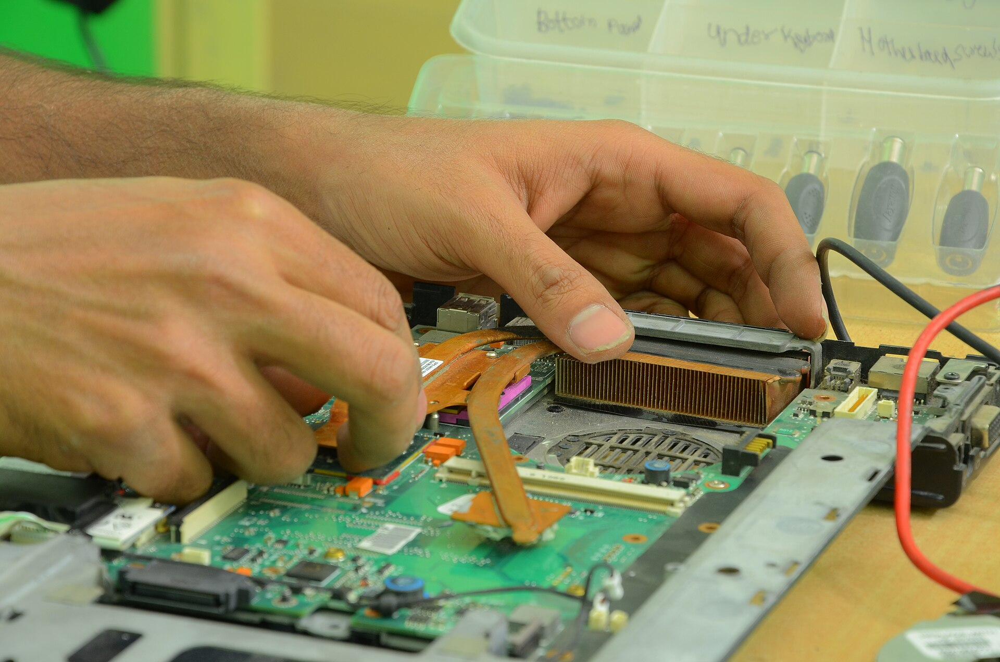
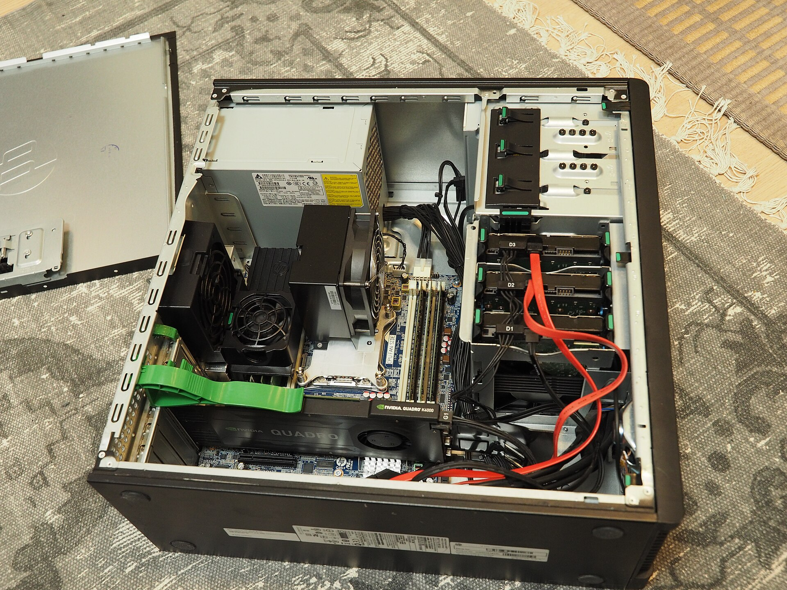

Заявка
Звонок или форма на сайте: фиксируем модель и симптомы до вашего приезда.
Работаем как лаборатория: сначала чёткий протокол диагностики, затем письменное согласование стоимости, и только после этого — ремонт. Вы всегда знаете, что происходит с вашим устройством.
// подпись: цифры и фотографии — демонстрационные

Выберите симптом — подскажем, с какой услуги обычно начинают, и покажем карточку ниже.
Полные описания, состав работ и позиции «оплачивается отдельно» — на странице услуг.
Одна и та же последовательность для ноутбука, игрового ПК и периферии.
Звонок или форма на сайте: фиксируем модель и симптомы до вашего приезда.
Устройство проходит проверку по 24 точкам — от питания до температурных замеров.
Присылаем список работ и цену. Ремонт начинаем только после вашего «да».
Разбираем и ремонтируем на антистатическом рабочем месте, все детали фиксируются в рабочем листе заказа.
Повторный прогон 22–24 точки проверки: стресс-тест, температуры, стабильность.
Отдаём устройство с чеком работ и гарантийным талоном на 90 дней.

Даём гарантию на выполненные работы и переустанавливаем бесплатно, если тот же узел снова даёт сбой. Условия — честные, со списком исключений: механические повреждения после выдачи и залития не покрываются.